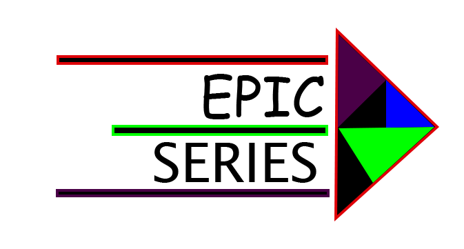

LA CASA DE PAPEL
4 Temporadas
VER AHORA
AGREGAR A VER MAS TARDE
Una banda organizada de ladrones tiene el objetivo de cometer el atraco del siglo en la Fábrica Nacional de Moneda y Timbre. Cinco meses de preparación quedarán reducidos a once días para poder llevar a cabo con éxito el gran golpe.